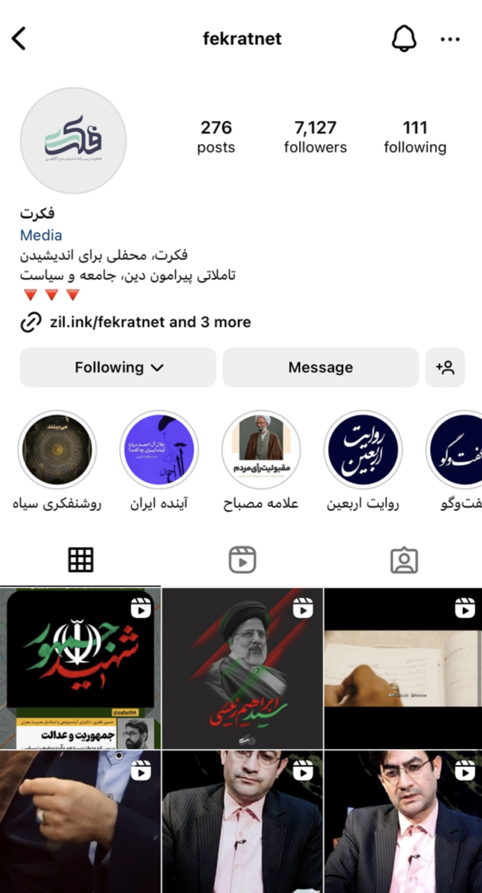
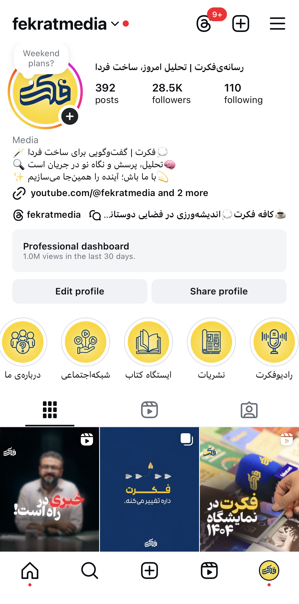
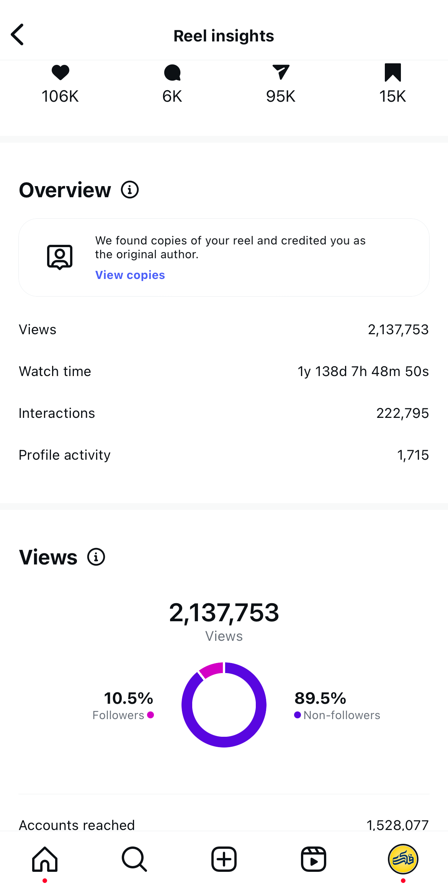
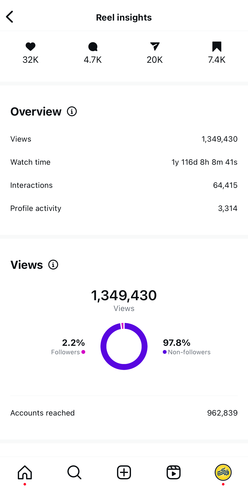
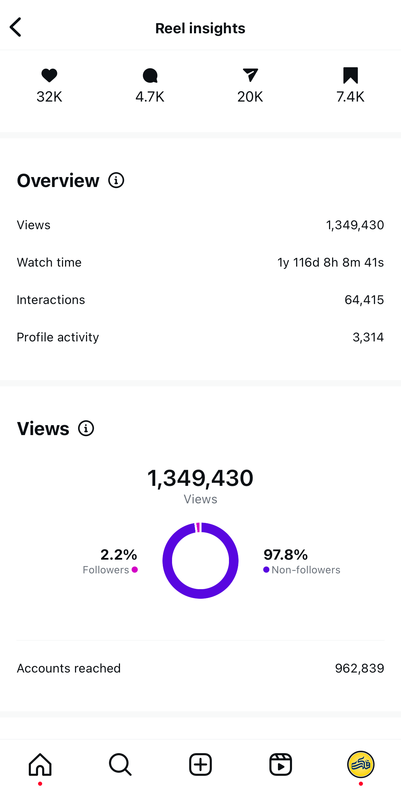
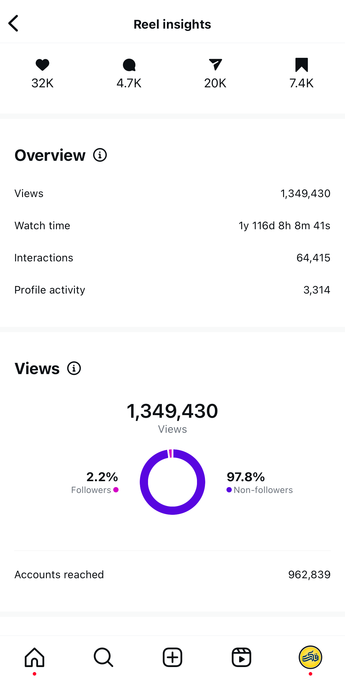
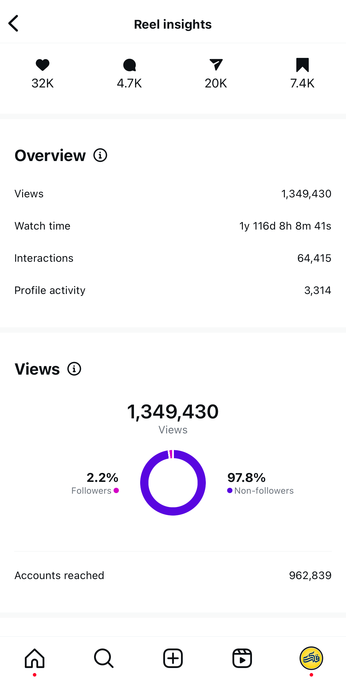

Top Performing Content
Page growth results from strategic content:



 


Strategic Content Marketer | Brand Storyteller | Social Media Specialist
Website: arefeabdolahi.ir
I am a strategic content marketer and social media manager with a focus on human-centered growth and storytelling that builds trust, engagement, and real impact—not just visibility.
M.IT Group
Sales Specialist
June 2022 – July 2022
Short-term sales project focusing on customer relationship building.
Raze Negahe Aftabgardan
Digital Marketing Expert
June 2022 – Feb 2024
Executed strategies for social initiatives, increased engagement via data.
Freelance
Social Media Manager
Jan 2024 – Present
Managing brand storytelling strategies and growth systems.
Page growth results from strategic content:
